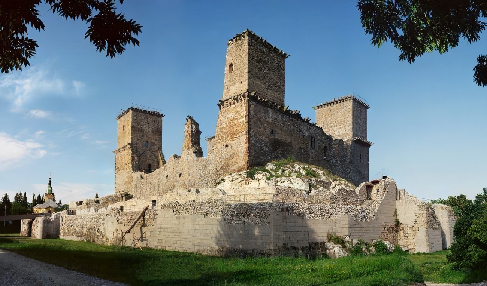
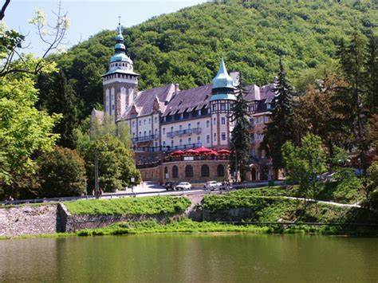
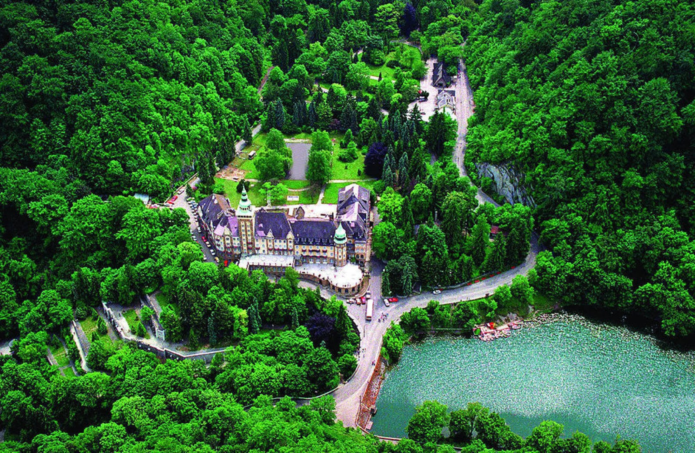
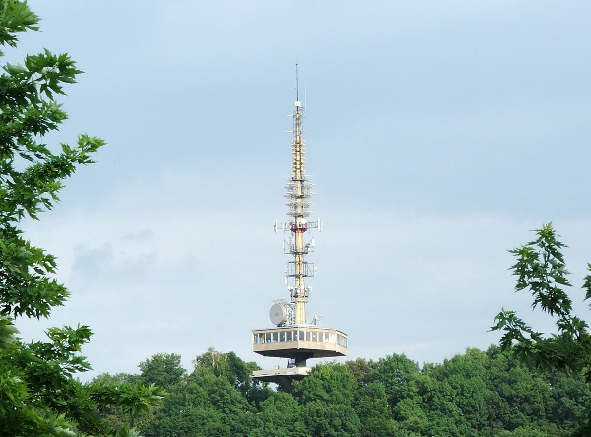
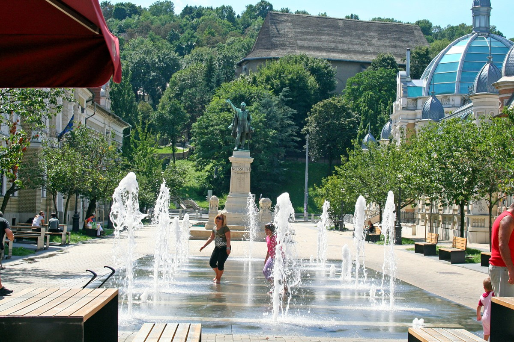
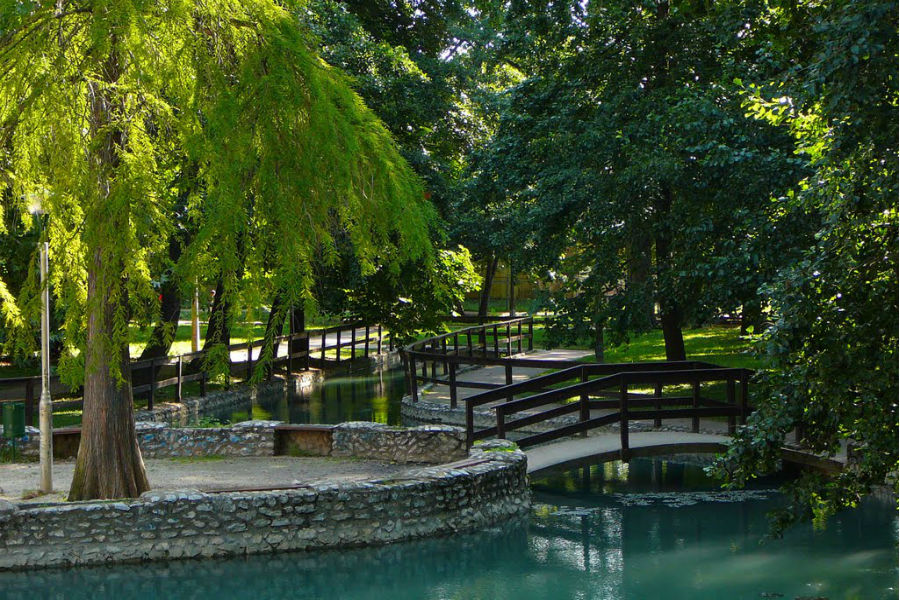

A város a Bükk-vidék keleti részén, abba „beágyazódva”, a Szinva, Hejő és a Sajó völgyében, különböző természeti
és gazdasági tájegységek találkozásánál épült. A város kivételes szépségét e csodás fekvése miatt is köszönheti.
A Sajó, a Bódva és a Hernád összeolvadó völgysíkja, a Miskolci kapu ősidők óta jelentős áru- és személyforgalom
színtere.A város sokévi átlagos havi középhőmérsékleteit tekintve elmondható, hogy a leghidegebb hónap a január,
míg a legmelegebb a július. Az évi közepes hőingás 22,1 °C. Az évi átlagos felhőborítottság 60% körüli.Miskolc
Magyarország egyik legjelentősebb ipari központja. A hagyományos nehézipari és élelmiszeripari ágazatok mellett
ma már jelentős szerephez jutnak a modern elektronikai, járműipari és vegyipari cégek is a város gazdaságában.
Számos innovációs klaszter is működik a városban.
Miskolc ambíciója, hogy részben a helyi nagy múltú egyetem tudományos alapjaira építve, részben a már
letelepedett nagyvállalatok műszaki hátterére alapozva, a térség kutató-fejlesztő központja legyen.






 Charge and save
Charge and save